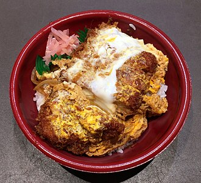

Katsudon

Description
Katsudon is a fried, panko-breaded pork cutlet with egg over rice and a favorite of Japanese restaurant-goers. This recipe is from allrecipes.
Ingredients
- ⅔ cup prepared dashi stock
- 2 teaspoons white sugar
- 2 teaspoons mirin (Japanese sweet wine)
- 2 teaspoons soy sauce
- ½ teaspoon salt
- 1 tablespoon vegetable oil
- 1 small onion, chopped
- 2 (3 ounce) fried breaded pork chops, sliced into long strips
- 2 eggs, beaten
- 1 ½ cups cooked short-grain rice
Steps
- Mix dashi, sugar, mirin, soy sauce, and salt together in a small bowl.
- Heat vegetable oil in a small skillet over medium heat.
- Add onion; cook and stir until translucent, about 5 minutes.
- Stir in dashi mixture. Lay pork slices carefully on top of the onions.
- Drizzle eggs around the slices. Cover skillet and cook until eggs are set, about 2 minutes.
- Divide rice between 2 bowls. Top each with half the onions, eggs, and pork slices.
Home